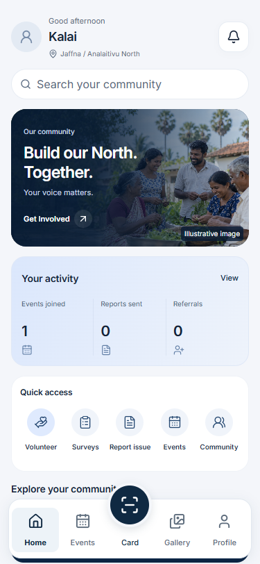
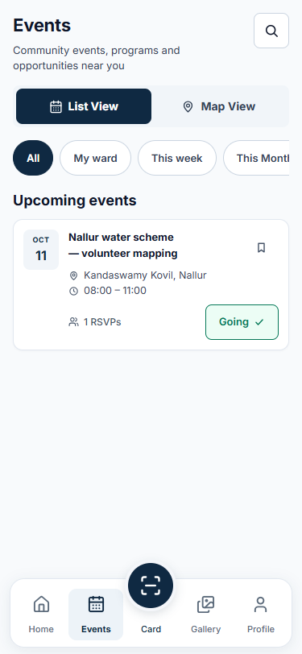
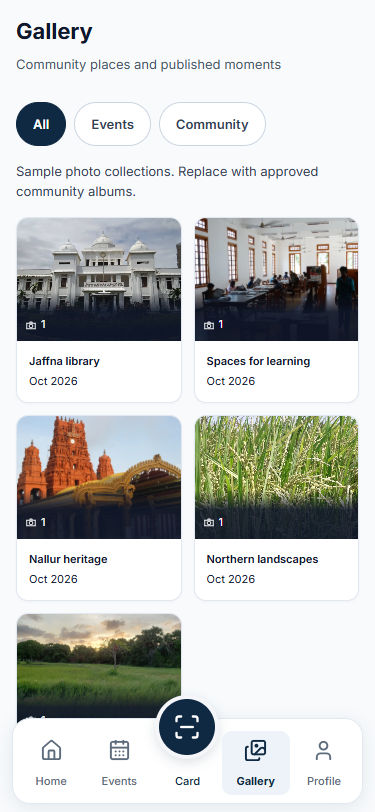

<!doctype html>
<html lang="en"><meta charset="utf-8"><meta name="viewport" content="width=device-width,initial-scale=1"><title>My People · Civic UI review</title>
<style>body{margin:0;background:#f8fafc;color:#0f172a;font:15px/1.6 system-ui,sans-serif}header{padding:32px;background:#0f2942;color:white}h1{margin:0;font-size:28px}header p{margin:8px 0 0;color:#cbd5e1}nav{padding:16px 32px;display:flex;gap:24px;flex-wrap:wrap}a{color:#0f2942}main{display:grid;grid-template-columns:repeat(auto-fit,minmax(300px,1fr));gap:24px;padding:0 32px 32px}figure{margin:0}figcaption{font-weight:600;padding:12px 0}img{display:block;width:100%;max-width:375px;border:1px solid #e2e8f0;border-radius:12px;box-shadow:0 1px 2px rgba(15,23,42,.04)}footer{padding:16px 32px;font-size:13px;color:#475569}</style>
<header><h1>My People · என் மக்கள்</h1><p>Civic mobile UI · 9 October 2026 · Five stable destinations</p></header>
<nav><a href="production-design-specification.md">Production specification</a><a href="component-trees.md">Component trees</a><a href="my-people.tokens.css">Token stylesheet</a><a href="qa/results.json">Verification results</a></nav>
<main><figure><figcaption>Home · next action and local context</figcaption></figure><figure><figcaption>Events · one clear card surface</figcaption></figure><figure><figcaption>Card · native digital wallet pass</figcaption></figure><figure><figcaption>Gallery · photographs and captions</figcaption></figure><figure><figcaption>Profile · compact identity and controls</figcaption></figure></main>
<footer>Screenshots use a synthetic member and event. Gallery photographs are licensed, replaceable samples. This is a local design review; the deployed server has not been changed.</footer></html>
